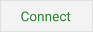

Google Drive Access
Enabling Google Drive from the settings menu opens the Google Drive
Access dialog:
 Touching
the "Connect" button will open your device's authorization screen
allowing you to choose the Google Account you want to use to share
data. This may normally be the Gmail account associated with
your device, however you could also use a separate shared Gmail
account. All phones sharing your grocery list must choose the
same Gmail account from which to share data. For example: your
general Gmail account used by everyone in your family.
Pressing the
"Cancel" button disables use of Google Drive and returns you to the
Settings menu.